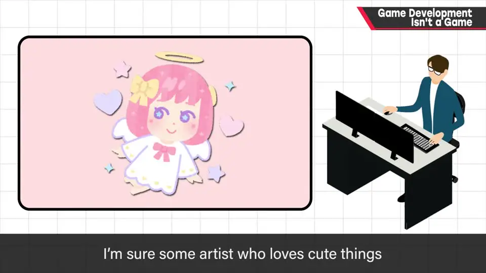
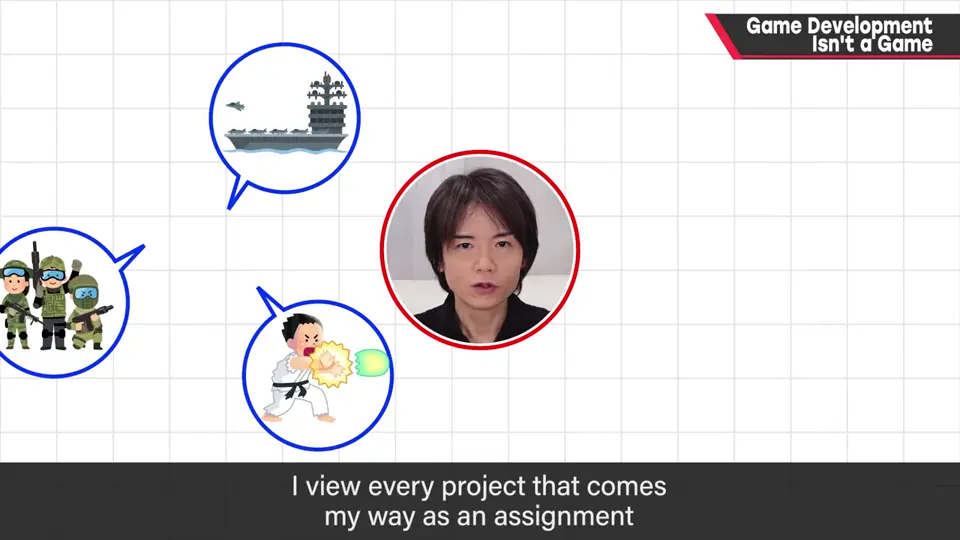
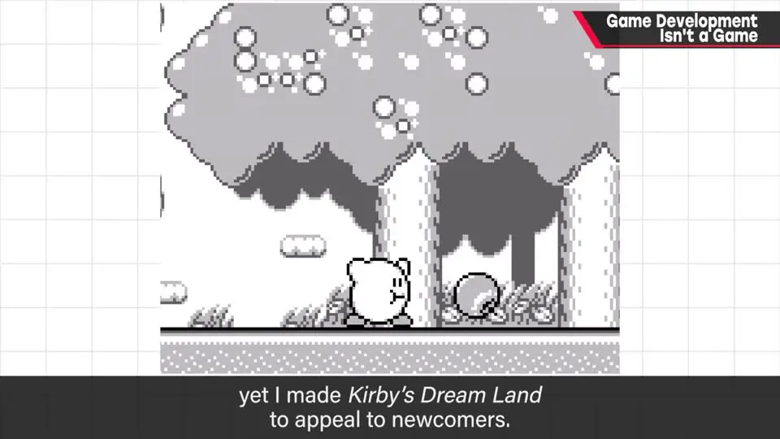
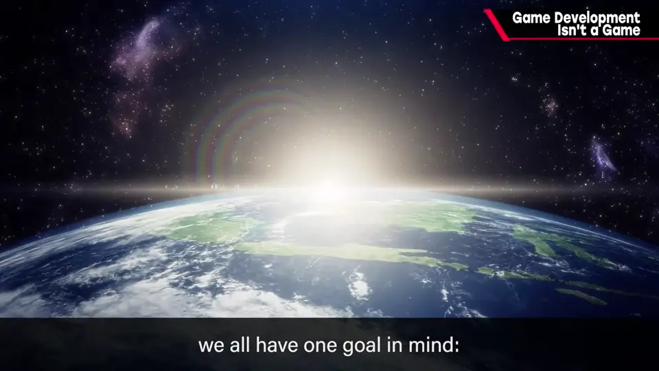

速览
被问到「为什么做游戏」，樱井的回答是：因为这是我最擅长的工作，「喜欢游戏」的优先级更低。做游戏是制造乐趣的工作，但这份工作本身不是玩乐；只要涉及金钱，就必须当成工作——独立开发者收了钱也是专业人士。团队成员做不合口味的东西是家常便饭，要把活干好，也尽量从中找到乐趣。樱井自己不按个人喜好立项，把指定的类型当作课题来解决（如面向新手的《星之卡比》、他不擅长的下落式拼图《Meteos》）。不论做什么，最终目的都是让玩家开心——迷茫时就回想这一点。
1. 做游戏是一份工作，不是玩乐 0:00
被问到「为什么做游戏」，多数开发者会说「因为喜欢游戏」——这本身没错。樱井的回答则是：因为这是我最擅长的工作；「喜欢游戏/喜欢做游戏」对他来说优先级更低。
- 做游戏是「制造乐趣」的工作，但这份工作本身不是玩乐。业余做游戏可以，但只要涉及卖钱，就必须当成工作对待。
- 独立游戏也一样：收了钱就是专业人士，要能灵活地回应需求。
- 团队成员做不合自己口味的游戏是家常便饭——比如热爱可爱风格的美术，也许要一直画僵尸、蟑螂的精细贴图。即便与喜好相反，也要把活干好；当然最好是在其中找到乐趣和成就感。
- 就算成为总监、游戏设计师，能做自己喜欢的东西的机会变大，也不一定就是在做自己喜欢的。


2. 不按个人喜好立项，终极目标是让玩家开心 2:21

樱井说自己不按个人喜好立项：不管被指定什么类型，都把它当作一个课题，思考后做出切中目标的东西。同时他也尽量享受过程——自己的作品在发售后也玩得挺开心。
理解「游戏的乐趣从何而来」，就能不受个人口味限制，做出风格广泛的作品。
不变的终极目标：不管做什么类型，作品的最终目的都是让玩家开心。遇到困难、迷失方向时就回想这一点，把「让玩的人享受」当作行动的动力。

自测题
1. 被问「为什么做游戏」，樱井的回答是什么？「喜欢游戏」处于什么位置？
「因为这是我最擅长的工作。」「喜欢游戏/喜欢做游戏」的优先级比这更低。只要涉及金钱，做游戏就必须当作工作，独立开发者收了钱也是专业人士。 0:16
2. 樱井举了哪两个例子说明自己不按个人喜好立项？
常玩游戏的他做了面向新手的《星之卡比》；不擅长下落式拼图的他做了《Meteos》。他把被指定的类型当作「课题」来解决。 2:26
3. 做各种类型游戏的开发者，共同的终极目标是什么？
让玩家开心。遇到困难、迷失方向时，就回想这一点，把「让玩的人享受」当作行动的动力。 3:27